List of Created Time Sheets
You can perform the following in the List of Created Time Sheets Section:
- Create a New Time Sheet for an individual
- Create a New Time Sheet for a team
- Copy Template
- Add Employees from another crew
- Search the Existing Records
- Enter the Time Sheet Details
- Add additional Cost Code/wages
- Add the Task/Expenses
- Submit the Time Sheet for Approval
- Request for additional time
- Search and Edit the Time Sheet
Create New Time Sheet for an individual:
This section helps you to create a new Time Sheet for an individual.
To create a new Time Sheet for an individual, do the following.
- Click and the Create Time Sheet page opens as shown in the figure.
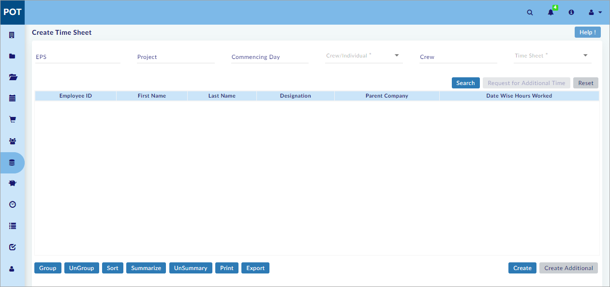
- On the Create Time Sheet page, select EPS or Project.
- Select Commencing Day.
Note:
- Week Commencing Day is fetched from Projects > Project Settings > Time Sheet tab.
- Select Individual from the Crew/Individual drop-down menu.
Note:
- If attendance details are available for the logged-in individual for the selected date (commencing day), user details are displayed in Individual
- Select Individual (double-click to select) and click
 and the Time Sheet window opens as shown in the figure.
and the Time Sheet window opens as shown in the figure.
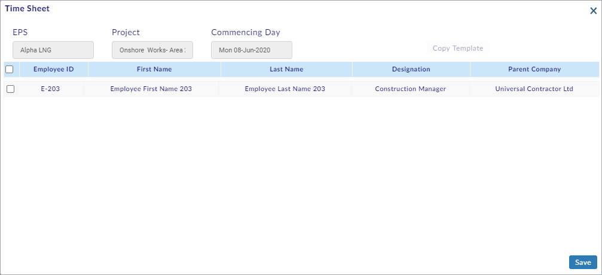
- Select the record and click
 to save the employee details.
to save the employee details.
You have successfully created a new Time Sheet for an individual.
Create New Time Sheet for a team:
This section helps you to create a new Time Sheet for a team.
To create a new Time Sheet for a team, do the following.
- Click
 and the Create Time Sheet page opens as shown in the figure.
and the Create Time Sheet page opens as shown in the figure.

- On the Create Time Sheet page, select EPS or Project.
- Select Commencing Day.
- Select Team from the Crew/Individual drop-down menu.
- Select Crew (double-click to select) and click
 and the Time Sheet window opens as shown in the figure.
and the Time Sheet window opens as shown in the figure.
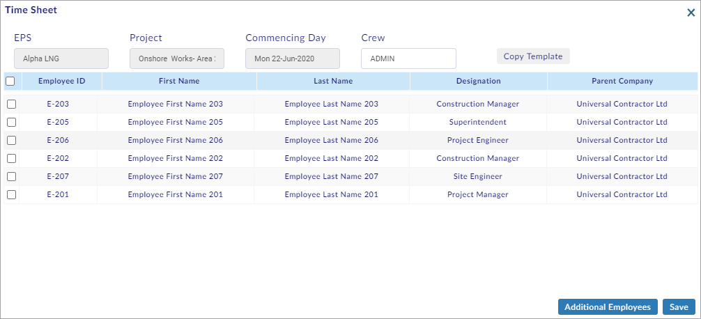
- Select the required employee record(s).
To copy the previous template, do the following.
- Click and the Copy Time Sheet window opens as shown in the figure.
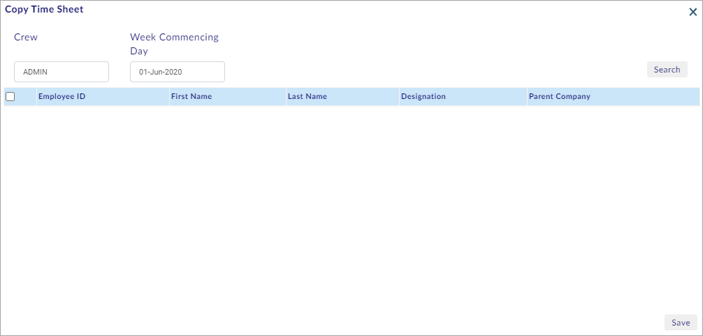
- Select Crew, and then select Week Commencing Day.
Note:
- Previous week’s date is shown by default in Week Commencing Day.
- Click Search and the search results are shown as shown in the figure.
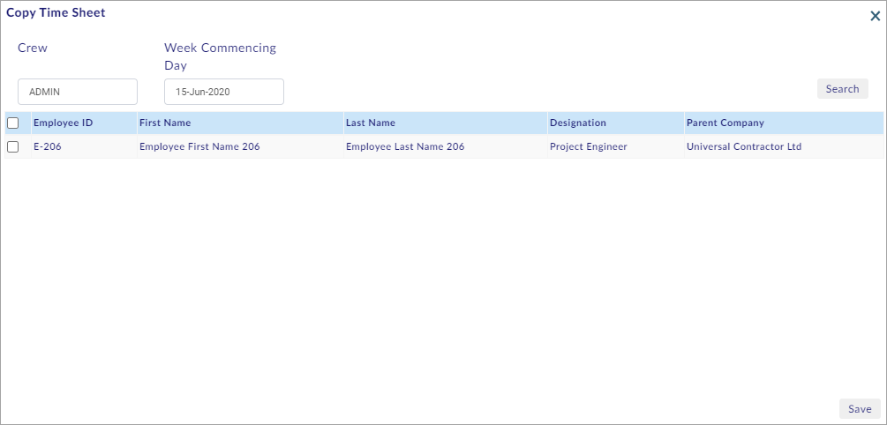
- Select the required employee record(s) and click and the same is added as shown in the figure.
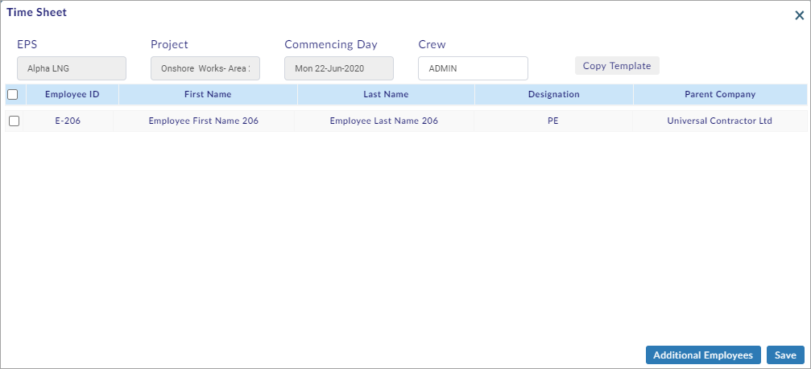
Add Employees from another crew:
To add the employees from another crew, do the following.
- Click and the Employee List window opens as shown in the figure.
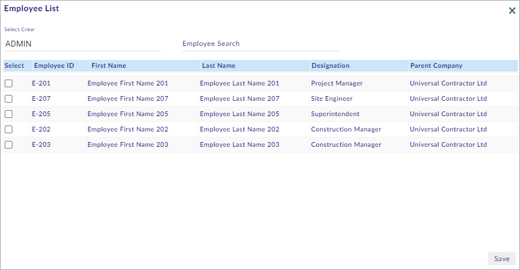
- Select Select Crew, and then select the employee record(s) and click
 and the same is added as shown in the figure.
and the same is added as shown in the figure.
Note:
- Enter any employee detail in Employee Search to search the employee(s).
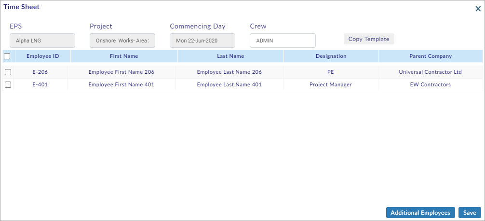
- Select the required employee record(s) and click
 to save the employee details.
to save the employee details.
You have successfully created a new Time Sheet for a team.
This section helps you to search the existing Records.
To search the existing Records, do the following.
- Perform steps 1 - 4 of Create New Time Sheet for a team Section (See the Create New Time Sheet for a team Section above).
- Select Crew (double-click to select), and then select Time Sheet.
- Click Search to view the records as shown in the figure.
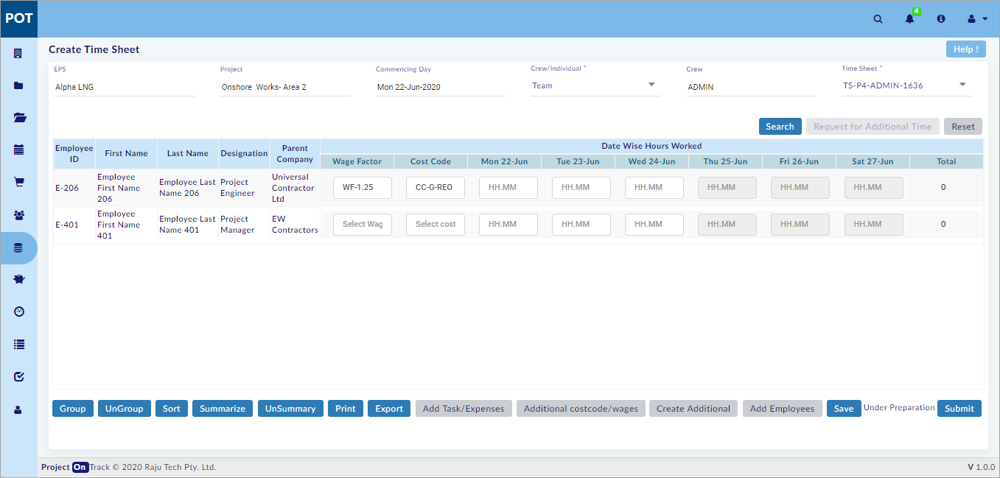
Note:
- Click Reset to reset the screen to the default view.
You have successfully searched the existing records.
This section helps you to enter the Time Sheet Details.
To enter the Time Sheet Details, do the following.
- Search the existing records. (See the Search Existing Records Section above)
- Select Wage Factor (double-click to select), and then select Cost Code (double-click to select).
Note:
- Wage Factor and Cost Code details are fetched from Projects > Project Library.
- Enter the remaining Date Wise Hours Worked details and Click
 to save the details.
to save the details.
You have successfully entered the Time Sheet Details.
Add additional Cost Code/wages:
This section helps you to add additional Cost Code/wages.
To add additional Cost Code/wages, do the following.
- Search the existing records. (See the Search Existing Records Section above)
- Select the record as shown in the figure.

- Click and the same is added as shown in the figure.
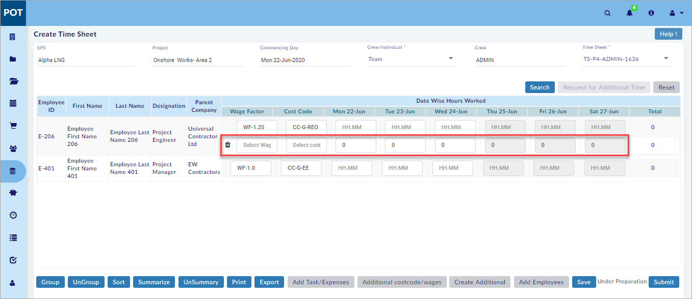
- Enter the required details and Click
 to save the details.
to save the details.
Note:
- The total of added cost codes/hours should not exceed maximum hours mentioned in Projects > Project Settings > General Values tab.
- Click to delete the added Cost Code/wages.
You have successfully added the additional Cost Code/wages.
This section helps you to add the Task/Expenses.
To add the Task/Expenses, do the following.
- Search the existing records. (See the Search Existing Records Section above)
- Select the record as shown in the figure.
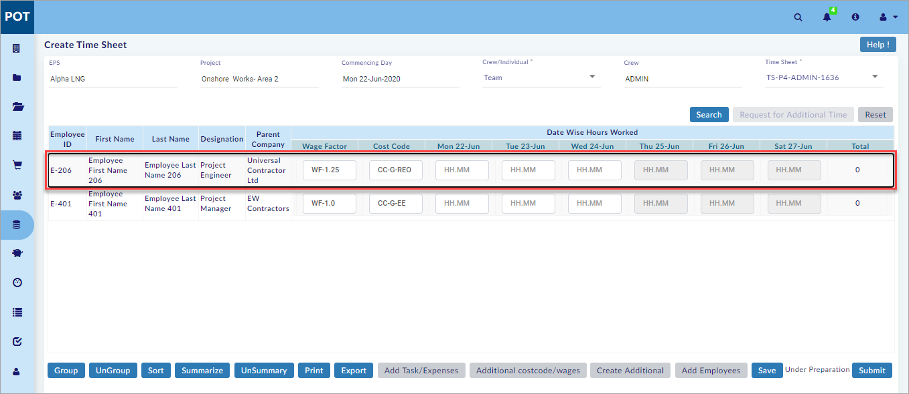
- Click and the Time Sheet window opens as shown in the figure.
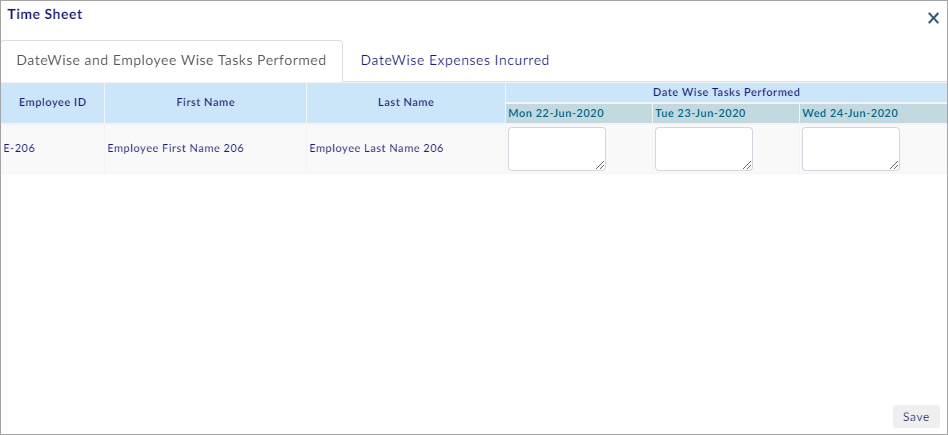
- Enter the tasks performed.
- On the Time Sheet window, Select DateWise Expenses Incurred tab.
- The DateWise Expenses Incurred tab opens as shown in the figure.
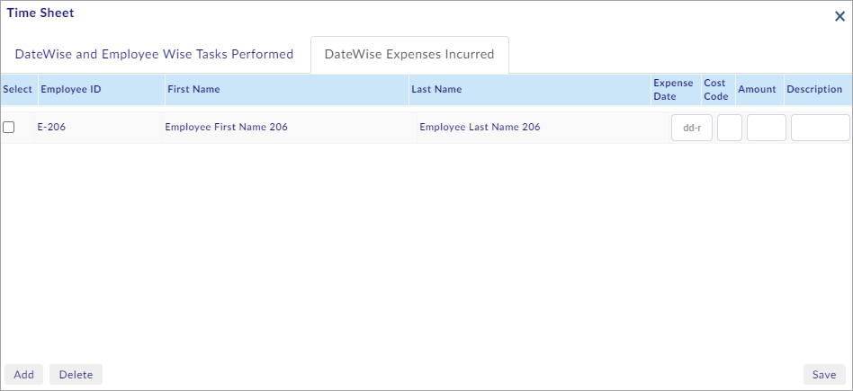
- Select/enter the required details and click
 to save the details.
to save the details.
Note:
- Click to add row(s).
- Select the row(s) and click to delete row(s).
You have successfully added the Task/Expenses.
Submit Time Sheet for Approval:
This section helps you to Submit the Time Sheet for Approval.
To Submit the Time Sheet for Approval, do the following.
- Search the existing records. (See the Search Existing Records Section above)
- After entering the required details, click and the Time Sheet Submit For Approval window opens as shown in the figure.
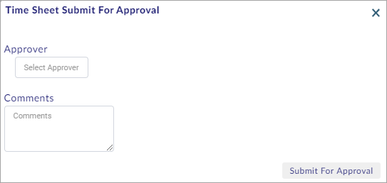
- Select the Approver and the Approve User Details window opens as shown in the figure.

- Select the internal approver and write the comments in Comments.
Note:
- Admin – User List is displayed in Approve User Details window.
- Click to Submit the Time Sheet for approval.
You have successfully submitted the Time Sheet for Approval.
This section helps you to request for additional time.
To request for additional time, do the following.
- Search the existing records. (See the Search Existing Records Section above)
- In case of exceeding normal time in Projects > Project Settings > Time Sheet tab, click and the Time Sheet Notification window opens as shown in the figure.
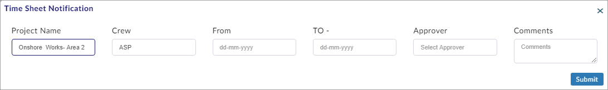
- On the Time Sheet Notification window, select/enter the required details and click
 to request for additional time and generate a notification.
to request for additional time and generate a notification.
Note:
- Submit is disabled when normal time exceeds in Projects > Project Settings > Time Sheet tab.
- Additional time request is sent to Projects > Project Settings > Time Sheet tab > Additional time sub-tab. The time sheet can be submitted after approval.
You have successfully requested for additional time.
Important:
- Searching the existing Records, entering the Time Sheet Details, adding additional Cost Code/wages and adding the Task/Expenses can be performed for Individuals also. Refer the above sections.
Tip:
- On the Create Time Sheet page, Individual should be selected instead of Team from the Crew/Individual drop-down menu.
This section helps you to Search and Edit the Time Sheet.
To Search and Edit the Time Sheet, do the following.
- Go to List of Created Time Sheets’ home page.
- Select EPS Name or Project Name, and the Enterprise Projects window opens as shown in the figure.

- Select the required projects and click
 .
. - Select Login User Records to search the records of the logged-in user (or select All User Records to search the records of all the users).
- Select From Date and To date.
- Click Search and the search results are shown on the screen as shown in the figure.
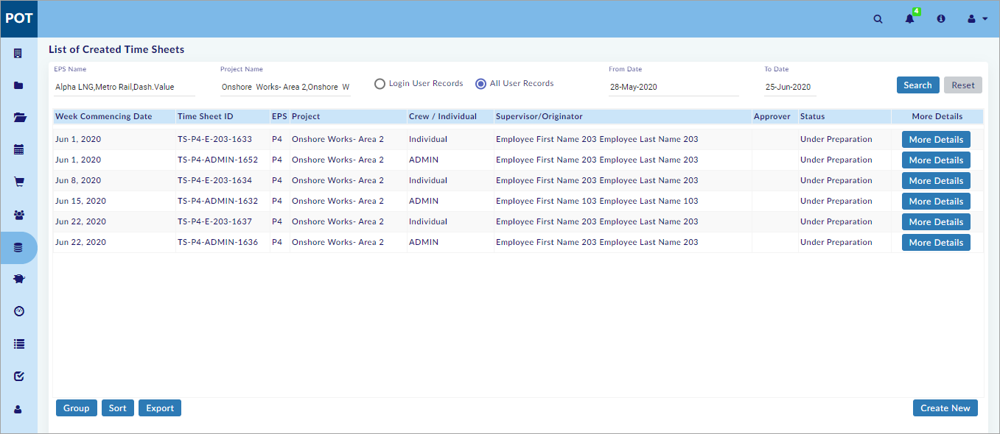
Note:
- Click Reset to reset the screen to the default view.
- Click and the Create Time Sheet window opens as shown in the figure.
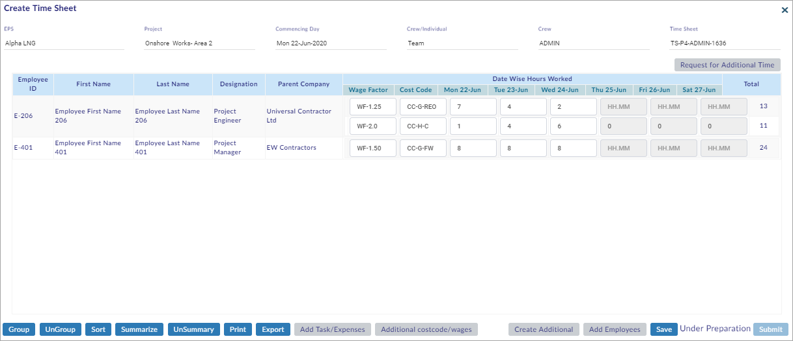
- Edit the Time Sheet details.
To perform actions using the various buttons available on the Create Time Sheet window, refer the above sections.
- Click
 to save the Time Sheet details.
to save the Time Sheet details.
You have successfully searched and edited the Time Sheet.
Created with the Personal Edition of HelpNDoc: Free Qt Help documentation generator